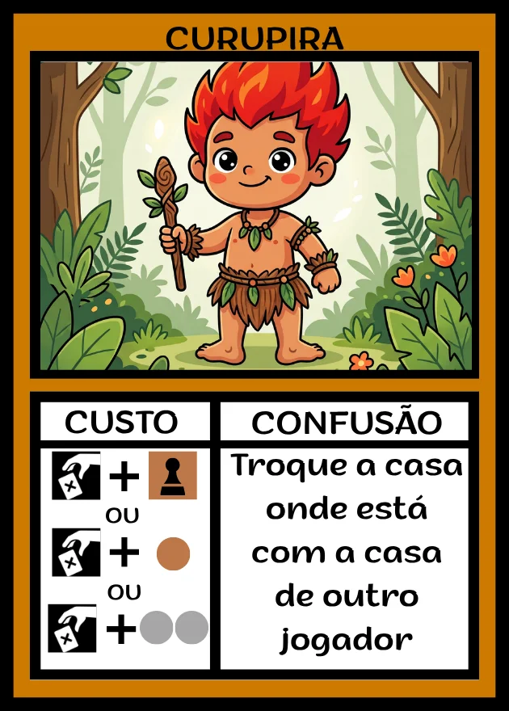
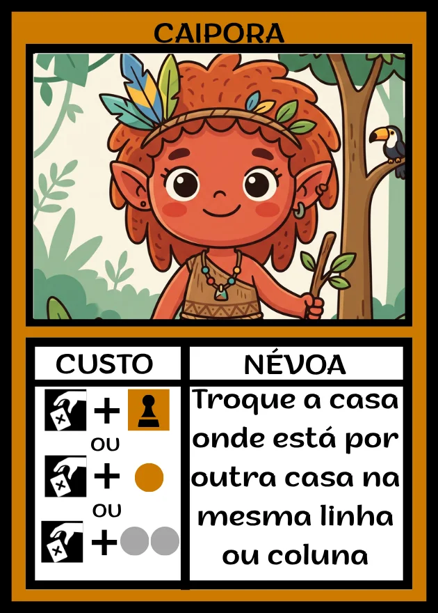
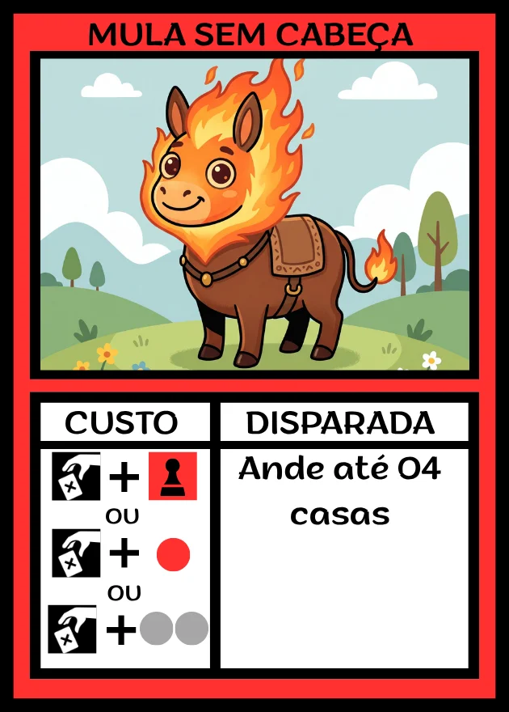
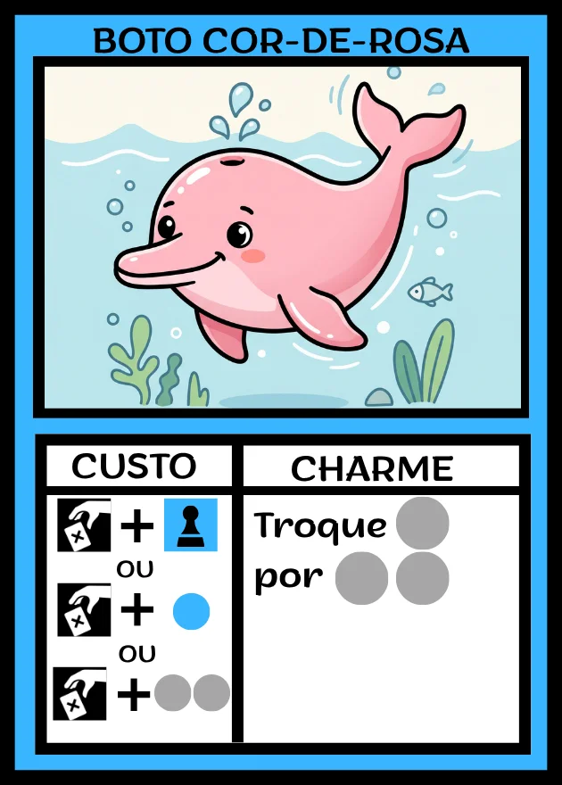
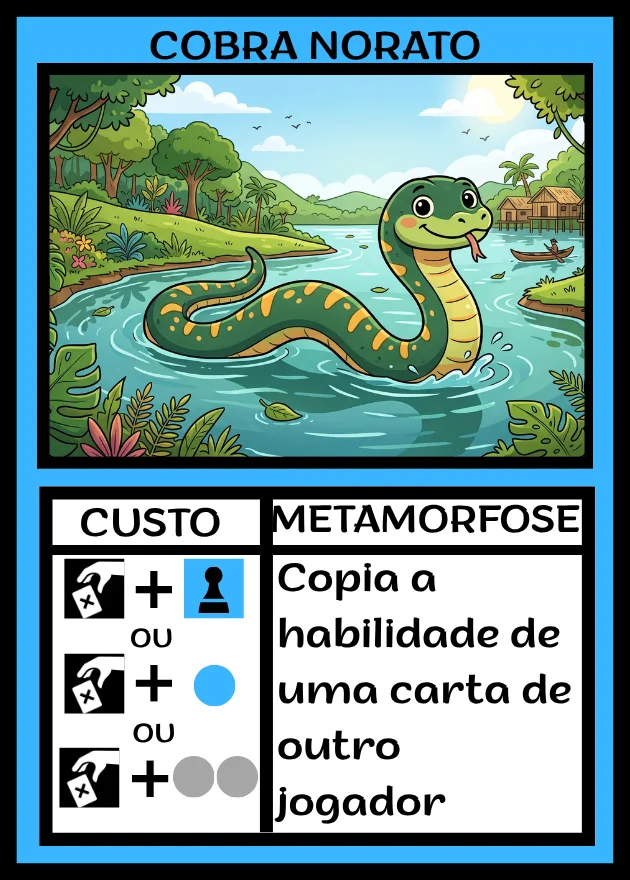
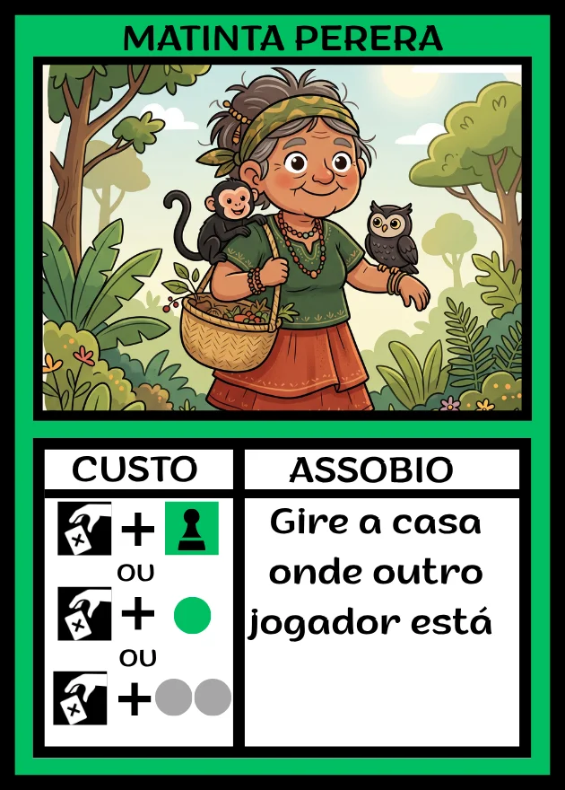
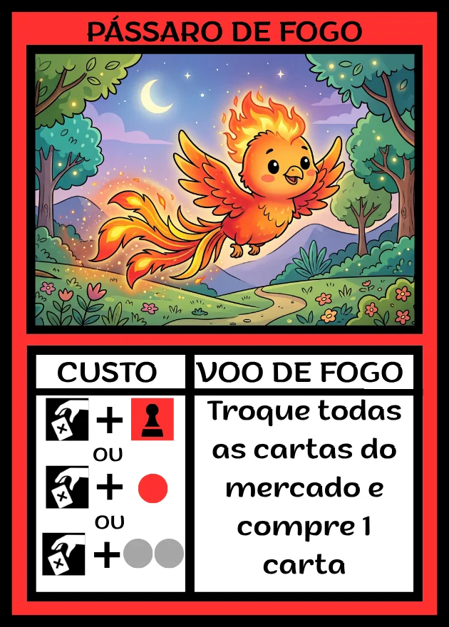
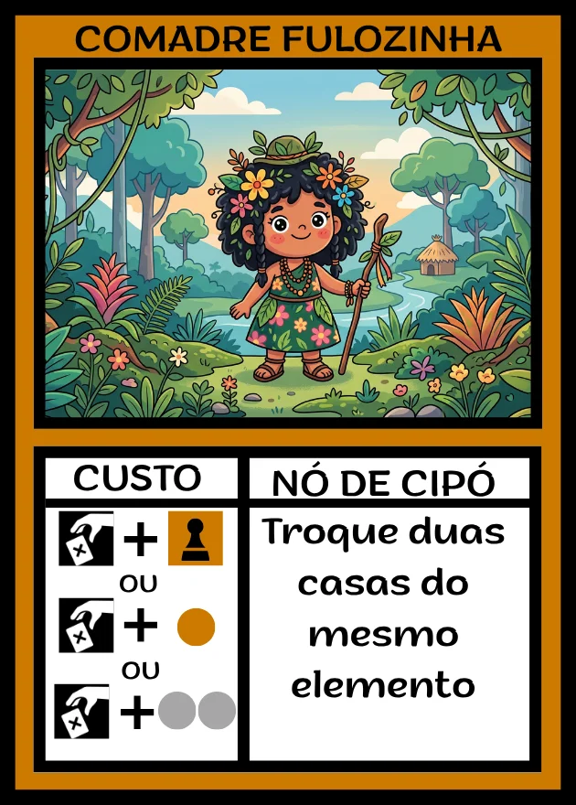
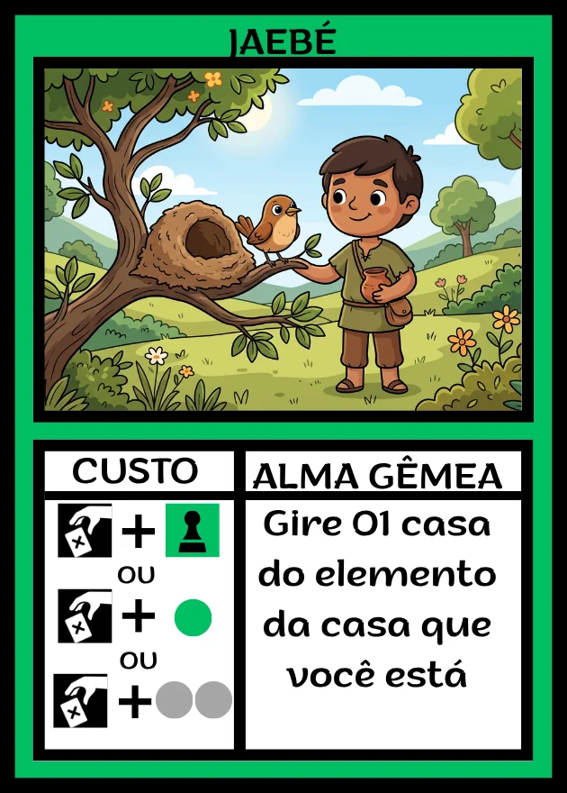

Criamos jogos de tabuleiro autorais e transformamos nossos protótipos em experiências digitais para ampliar as possibilidades de playtest. A mesa continua sendo o lugar do jogo. O ambiente online nos ajuda a testar mais, aprender mais rápido e aprimorar cada projeto.
Jogos de tabuleiro são uma das formas mais divertidas de passar tempo junto — sem tela entre as pessoas.
Conversa, risada e aquela rivalidade saudável. Um jogo transforma qualquer encontro num momento memorável.
Planejar jogadas, prever o adversário e mudar de estratégia exercita raciocínio, memória e criatividade.
Regras simples e partidas curtas fazem crianças e adultos jogarem juntos, de igual para igual.
Cada jogo conta uma história. Os nossos trazem lendas e personagens do folclore brasileiro para a mesa.
Uma corrida pela natureza acompanhada dos personagens do folclore brasileiro.
12 personagens, cada um com uma habilidade que pode virar a partida.









A MF Board Game Design cria jogos de tabuleiro autorais, buscando ideias inovadoras e um game design elegante, em que cada elemento contribua para a experiência à mesa.
Valorizamos o trabalho dos artistas e utilizamos imagens geradas por inteligência artificial apenas durante a fase de prototipagem, como recurso temporário no processo de desenvolvimento.
Este site é uma ferramenta importante nesse processo: o playtest. Acreditamos que, nos jogos de mesa, nada substitui a experiência dos componentes físicos e das pessoas reunidas ao redor da mesa. A versão digital dos protótipos não pretende substituir essa experiência, mas ampliar as possibilidades de teste, permitindo experimentar mais partidas, identificar problemas e aprimorar cada jogo antes de sua versão final.
Crie uma sala, mande o código para os amigos e comece a corrida. Não precisa instalar nada nem criar conta.
▶ Jogar Trilha das Lendas